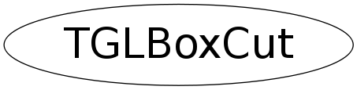

Function Members (Methods)
public:
| TGLBoxCut(const TGLPlotBox* plotBox) | |
| TGLBoxCut(const TGLBoxCut&) | |
| virtual | ~TGLBoxCut() |
| static TClass* | Class() |
| void | DrawBox(Bool_t selectionPass, Int_t selected) const |
| Rgl::Range_t | GetXRange() const |
| Rgl::Range_t | GetYRange() const |
| Rgl::Range_t | GetZRange() const |
| virtual TClass* | IsA() const |
| Bool_t | IsActive() const |
| Bool_t | IsInCut(Double_t xMin, Double_t xMax, Double_t yMin, Double_t yMax, Double_t zMin, Double_t zMax) const |
| void | MoveBox(Int_t px, Int_t py, Int_t axisID) |
| void | ResetBoxGeometry() |
| void | SetActive(Bool_t a) |
| void | SetFactor(Double_t f) |
| virtual void | ShowMembers(TMemberInspector& insp) |
| void | StartMovement(Int_t px, Int_t py) |
| virtual void | Streamer(TBuffer& b) |
| void | StreamerNVirtual(TBuffer& b) |
| void | TurnOnOff() |
private:
| void | AdjustBox() |
Data Members
private:
| Bool_t | fActive | |
| TGLVertex3 | fCenter | |
| Double_t | fFactor | |
| TPoint | fMousePos | |
| const TGLPlotBox *const | fPlotBox | |
| Double_t | fXLength | |
| pair<double,double> | fXRange | |
| Double_t | fYLength | |
| pair<double,double> | fYRange | |
| Double_t | fZLength | |
| pair<double,double> | fZRange |
Class Charts
{kind=link}
{kind=link}
{kind=link}
{kind=link}

Function documentation
Bool_t IsInCut(Double_t xMin, Double_t xMax, Double_t yMin, Double_t yMax, Double_t zMin, Double_t zMax) const
Check, if box defined by xmin/xmax etc. is in cut.
TGLBoxCut(const TGLPlotBox* plotBox)